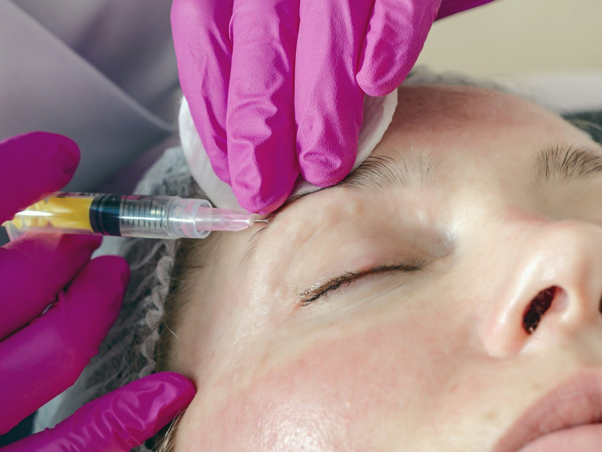

Antes de elegir
Bótox o ácido hialurónico:
qué hace cada uno
Uno relaja el gesto que arruga. El otro rellena lo que perdió volumen. Pedir el que no te sirve solo retrasa tu resultado.
Llegas a la consulta pidiendo "lo del bótox" para los labios, o "un relleno" para el entrecejo, y tu médica te explica que es justo al revés. Es la confusión más común antes de un tratamiento de medicina estética en Medellín: bótox o ácido hialurónico no son dos nombres de lo mismo, sino dos herramientas que corrigen cosas distintas. Entender cuál hace qué te ahorra una cita mal pedida.
Qué hace la toxina botulínica (lo que casi todos llaman bótox)
La toxina botulínica es una sustancia purificada que bloquea, por un tiempo, la señal del nervio al músculo donde se inyecta. Sin esa señal, el músculo se contrae con menos fuerza y la línea que formaba ese gesto se suaviza. No rellena nada ni cambia el volumen de tu rostro: trabaja sobre el movimiento.
Las zonas más comunes son frente, entrecejo y patas de gallo, las líneas que se marcan con los gestos de todos los días. También se usa para el bruxismo y la sudoración excesiva en axilas o manos. El efecto empieza a notarse entre el día 3 y el 7, y dura en promedio de 4 a 6 meses.
Qué hace el ácido hialurónico (el relleno)
El ácido hialurónico es un relleno reabsorbible: un gel que se inyecta bajo la piel para devolver volumen o definir un contorno. Se usa en labios, ojeras, surcos, pómulos, mentón, mandíbula y para perfilar la nariz sin cirugía (rinomodelación). El efecto se ve de inmediato y dura de 6 a 18 meses según la zona tratada.
Mientras la toxina relaja un músculo que ya existe y se mueve de más, el ácido hialurónico suma volumen donde se perdió o nunca hubo suficiente. Por eso no compiten entre sí: responden preguntas distintas.
Cómo saber cuál pedir, según lo que te molesta
- Se te marca una línea cuando gesticulas (frunces, sonríes, levantas las cejas) y desaparece cuando el rostro está en reposo: es un caso típico de toxina botulínica.
- Notas menos volumen en los labios, ojeras hundidas, surcos marcados o quieres definir el perfil de la nariz o el mentón sin cirugía: ahí se evalúa el ácido hialurónico.
- Tienes las dos cosas: líneas de expresión en una zona y falta de volumen en otra. No es raro, y tu médica puede recomendar una combinación, cada una donde corresponde.
Lo que no cambia es quién decide: no es una lista de autodiagnóstico ni lo que viste en un video. Tu médica estética examina tu rostro completo en la valoración y ahí define qué tratamiento, en qué zona y con qué producto.
¿Se pueden combinar en la misma cita?
Puede ser, dependiendo de tu caso. Antes de cualquiera de los dos, la consulta incluye hablar de tratamientos previos con rellenos, toxina botulínica, láser u otros procedimientos faciales, justamente porque uno puede influir en el plan del otro. Si te conviene aplicarte ambos el mismo día, en qué orden y en qué zonas, es parte de lo que se decide contigo en la valoración, no algo que se ofrezca de entrada por combo.
Antes de aplicarte cualquiera de las dos, verifica que sea original
En Colombia, tanto la toxina botulínica como el ácido hialurónico deben tener registro sanitario vigente. El INVIMA ha emitido alertas por los dos productos falsificados, vendidos por internet, redes sociales y cadenas de WhatsApp, muchas veces sin registro y con etiquetas que ni siquiera están en español.
Antes de tu cita, pide el nombre del producto que te van a aplicar y verifica su registro en el buscador oficial del INVIMA. Según la ASPS, en la consulta te deben explicar además qué producto te recomiendan y por qué, no solo aplicarlo porque lo pediste.
Cuándo ninguna de las dos es la respuesta
Si lo que te preocupa es piel sin firmeza o flacidez, ni la toxina ni el ácido hialurónico la corrigen de fondo: ahí se evalúan opciones como hilos tensores o bioestimuladores, y en casos de flacidez marcada, una cirugía con el cirujano plástico. Y si lo que buscas es cambiar la estructura de la nariz o del mentón más allá de lo que da un relleno, la conversación es distinta: se revisa en la valoración si el camino es una rinomodelación o ya una cirugía.
Todo esto se resuelve en tu valoración presencial en Medellín con la Dra. Valeria Enciso, médica estética: revisa tu rostro completo, te dice si lo que necesitas es toxina, relleno, una combinación o algo distinto, y te explica cuánto dura en tu caso. Si todavía estás decidiendo entre un tratamiento como estos y una cirugía, puedes leer también criolipólisis o liposucción: cuál te conviene, con la misma lógica de elegir según tu caso y no según lo que viste en redes.
Procedimientos de esta guía
Esta guía es informativa y no reemplaza una valoración médica. La indicación, los tiempos de recuperación y la fecha de regreso los define tu especialista en persona. Todo procedimiento tiene riesgos y los resultados varían de una persona a otra.
Preguntas frecuentes
Preguntas frecuentes
¿Bótox y ácido hialurónico son lo mismo?
No. El bótox (toxina botulínica) relaja el músculo que forma la arruga de expresión. El ácido hialurónico es un relleno: devuelve volumen o define un contorno. Trabajan sobre cosas distintas.
¿Cuál dura más?
El ácido hialurónico, casi siempre. La toxina botulínica dura de 4 a 6 meses; el ácido hialurónico, de 6 a 18 meses según la zona y el producto.
¿Me puedo aplicar las dos en la misma cita?
Puede ser, según tu caso: lo que combines, en qué zonas y en qué orden lo decide tu médica estética en la valoración, no es una regla fija para todo el mundo.
Tengo líneas en la frente y el entrecejo, ¿cuál pido?
Esas líneas se marcan con el gesto, así que suelen tratarse con toxina botulínica. Tu médica lo confirma viendo cómo se mueve tu rostro.
Siento los labios más finos que antes, ¿cuál pido?
Eso es pérdida de volumen, no una línea de expresión: ahí se evalúa el ácido hialurónico.
¿Cómo sé que el producto que me van a aplicar es original?
Pide el nombre del producto antes de la cita y verifica que tenga registro sanitario vigente en el buscador oficial del INVIMA. El INVIMA ha alertado sobre toxina botulínica y ácido hialurónico falsificados que circulan por internet y WhatsApp.
Blog
Sigue leyendo.

Cuánto dura el bótox y cada cuánto repetirloEl efecto no se apaga de un día para otro, y la fecha de repetir no sale de un calendario.Leer Criolipólisis o liposucción: cuál es la indicada para tiGrasa localizada en una sola zona o un cambio que ya no cabe en una sesión: así se diferencian.Leer
Criolipólisis o liposucción: cuál es la indicada para tiGrasa localizada en una sola zona o un cambio que ya no cabe en una sesión: así se diferencian.Leer Cirugía plástica en Thanksgiving en Medellín: lo que sí alcanzaTienes jueves y viernes libres, el fin de semana suma, y te preguntas si ese puente alcanza para operarte en Medellín. La respuesta honesta depende de cuántos días reales tienes, no de las ganas.Leer
Cirugía plástica en Thanksgiving en Medellín: lo que sí alcanzaTienes jueves y viernes libres, el fin de semana suma, y te preguntas si ese puente alcanza para operarte en Medellín. La respuesta honesta depende de cuántos días reales tienes, no de las ganas.Leernoon Clinic
Tu valoración
Todo empieza con una conversación con nuestros especialistas.
Te respondemos en minutos por WhatsApp, en horario de atención. Resolvemos tus dudas y agendamos tu valoración presencial; por WhatsApp no diagnosticamos. Por qué noon